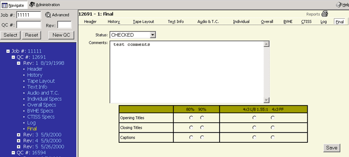

Alt+f then ENTER will take you to this page or clicking on FINAL in the menu bar on the right side. You can also click on the word FINAL in the Tree Frame (blue area).

The FINAL page displays fields for the following information which includes:
|
STATUS includes a pull down menu with predetermined choices. Some fields contain radio buttons where the user can choose 1 option. After entering the information please click the SAVE button to save your data.